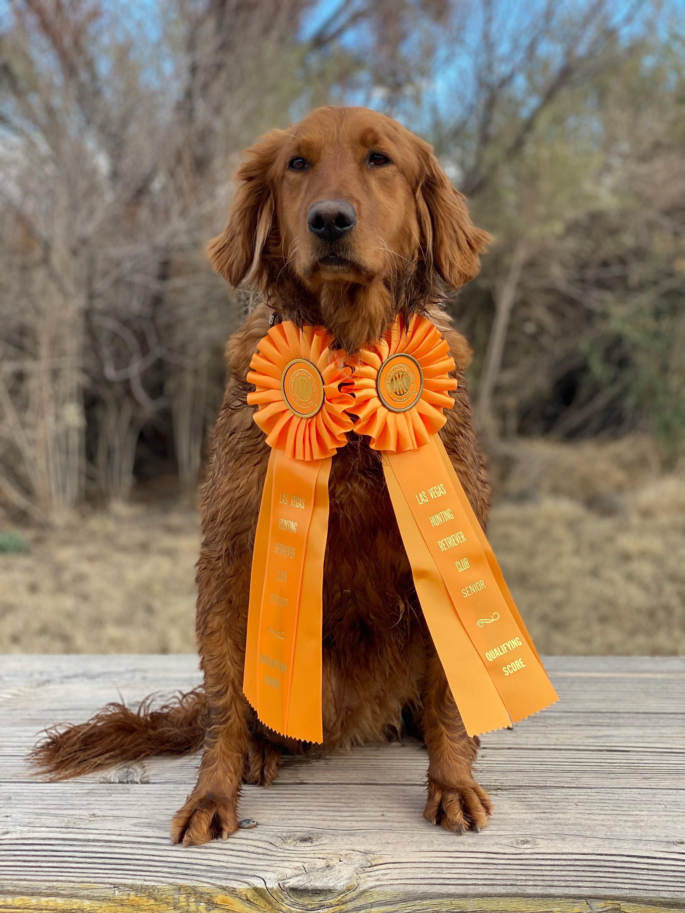

Episode 22 · February 28, 2024 · 3106
(EP:22) Does your dog have what it takes to be a Senior Hunter?

About This Episode
In this podcast we discuss the ins and outs of how to run a Senior Hunt Test with your retriever. Things to do and to avoid. If your looking for something to do with your retriever outside of just hunting, hunt tests might be the thing for you!
Questions about the training topics in this episode? Tyce works with bird dog owners and hunters through Utah Bird Dog Training. Reach out to work with him directly.
Resources & Links
- Kuranda Dog Beds — Elevated, chew-proof dog beds.
- Utah Bird Dog Training — Tyce's professional training services.
Transcript
Full transcript for Episode 22: (EP:22) Does your dog have what it takes to be a Senior Hunter?.
Tyce
Hey everyone, welcome to the Bird Dog Podcast. My name is Tyce. I'm on my way to a hunt test today so let's talk about the Senior Hunter level — what's required, how it works, and what to know before you run your first one.
Senior is a significant step up from Junior. In Junior, your dog runs single marks. In Senior, you're running doubles on land and doubles on water — two birds down simultaneously, dog has to mark both and retrieve them. There are also blind retrieves at the Senior level: the dog didn't see the bird fall and has to take directional casts from you to find it. That combination of marking doubles and handling on blinds is what separates Senior from Junior and requires a genuinely trained dog to get through consistently.
One important rule: in Senior (and Master), your dog runs the test with nothing on it. No collar. Nothing. If you walk your dog to the line with a collar on and run it, you will not pass. Between the holding blinds, keep the dog on a slip lead or choke chain that you can remove cleanly before going to the line. Make this a habit in training so it's automatic on test day.
The holding blind system is the same as Junior — you stage the dog behind pieces of fabric in the ground so it can't see what's happening in the field. A common mistake I see with handlers who haven't trained with holding blinds much: walking the dog nose-first into the blind. The dog hears everything going off and starts jumping, trying to see over the top, acting like it's caged. Instead, heel the dog so its rear end faces the blind, and it can stand looking outward away from the test. That helps the dog settle down significantly while it waits its turn.
Senior tests typically include a walkup, which simulates jump-shooting. The dog heels with you as you walk toward a certain point. As you cross a threshold, guns fire and a bird goes up. The dog must stay at heel during the walk, hold through the shot, and wait to be sent. This is a real test of steadiness under realistic hunting conditions.
Before you run, read the AKC hunt test rule book. Even if you've trained for a long time, it's worth reviewing. The rules specify exactly how dogs are scored and what causes a drop. Judges score on categories and your dog has to reach certain point thresholds to pass. If your dog doesn't pass and you don't understand why, wait until after the test and ask the judge privately. They can go back to the score book and walk you through it. Handle that conversation respectfully — you'll learn something, and the hunt test community is small. Good relationships with judges and other handlers matter. Senior Hunter is a real accomplishment for a dog and handler team. If your dog is handling on blinds and marking doubles cleanly, get out to a test. Thanks for listening.
About the Host
Tyce Erickson
Tyce Erickson is a professional bird dog trainer and the owner of Utah Bird Dog Training in Utah. For nearly two decades he has worked with pointing dogs, retrievers, and family hunting dogs — helping owners build dogs that are capable and enjoyable in the field. The Bird Dog Podcast is an extension of that work: honest conversations on training, hunting, breeding, and everything that goes into a life spent working dogs.
More About Tyce